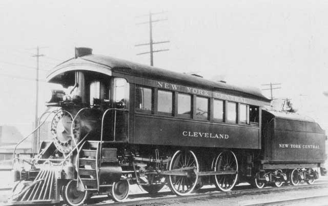
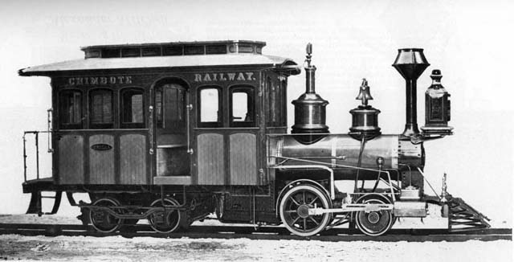

|
"angel" built with "steamclass 2004" at mylargescale.com
When Tom Farin suggested a "steam class" to coincide with the release of the new Accucraft Ruby kit, I was all over it! :) mylargescale.com is building quite a library of excellent model building classes, starting with Dave Fletcher's original "masterclass 2001", then the Mason Bogie class, other "MLS-ers" stepped in with a figure making class, rolling stock and structure scratchbuilding classes, and now Tom's steam class.. Check
out the classes and articles here:
and
here:
The
Accucraft Ruby is a popular "entry level" live steamer. simple, inexpensive,
yet fully-functional and very fun!
The
basic premise behind "steamclass 2004" is that the Ruby is HIGHLY kitbashable..meaning
it can be easily modified into an infinate number of forms and shapes!
So with a large number of willing participants, the class was underway.
click
here for the class itself:
and
many builder's logs and discussions can be found here:
So,
the first question for each model builder is..
I have always been fascinated with the variety of "Inspection Engines". Most of the North East railroads had one or more of this type of locomotive. They were the "Presidents engine", used by the President of the railroad and other big-wigs to tour and inspect the railroad in style. The "inspection engine" was always the most opulent locomotive on the railroad! As it should be of course, thats only fitting for the President's personal locomotive!


Most of these engines were "home built" by the railroad itself, in the railroad's shops. and thus there was a huge variety in forms and styles! There is only one survivor of the type. the Reading Railroad's "Black Diamond". at the National Transportation Museum in St. Louis.
So
could a locomotive of this style be built from a Ruby?
This cab became the basis of my entire project.
Using the Emilia cab as the basis for a bash, I played around with a few design concepts with photoshop. originally
I wanted to do something like this:
This
is more like the traditional "North Eastern" type inspection engine, with
the fancy cab covering most of the locomotive.
So I went this this concept, more along the lines of the prototype Emilia.
The
photoshopped rendering above is the prototype emilia cab, rear truck, domes,
stack and headlight superimposed on a Ruby boiler and drivetrain.
|